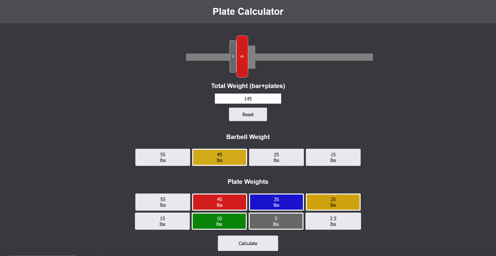
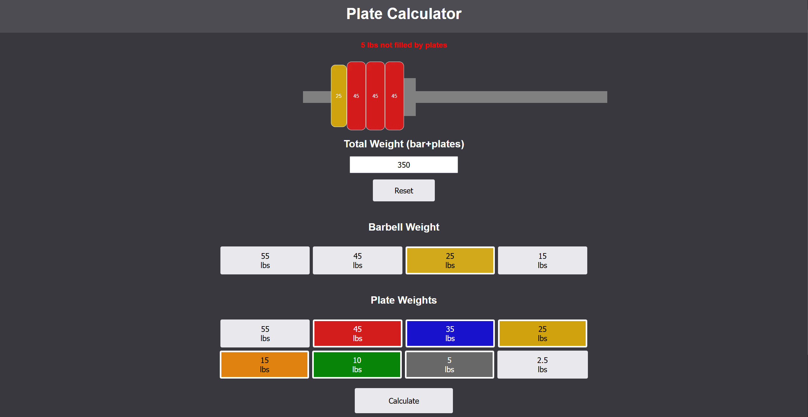

Why I Built It
When working out, figuring out which plates to load onto a bar can be surprisingly tedious, especially when working with a limited selection of plates. I wanted to create a simple tool that could take the guesswork out of setting up a barbell while also giving me an opportunity to build a practical web application from scratch.
What I Built
The Plate Calculator allows users to enter the weight of their bar, specify their desired total weight, and select the plates they have available. The calculator then determines a plate configuration that reaches the desired weight and displays which plates should be placed on each side of the bar.
The application accounts for different sets of available plates, allowing users to specify exactly what they have access to. This makes it useful for situations where certain plate sizes may be unavailable.
Technical Details
The application was built using HTML, CSS, and JavaScript. JavaScript handles the core calculation logic, taking the user's target weight, bar weight, and available plates and determining the most efficient combination using the fewest plates for each side of the bar.
The interface was built with HTML and CSS, with an emphasis on making the resulting plate configuration easy to understand at a glance. I used Flask as a local development server to host the application on my local network while testing it across different devices.
This project gave me experience building an interactive web application with vanilla JavaScript and translating a practical, real-world problem into an algorithmic solution.

